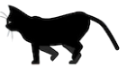
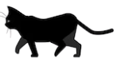
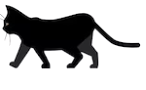
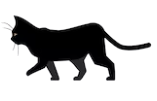
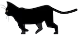
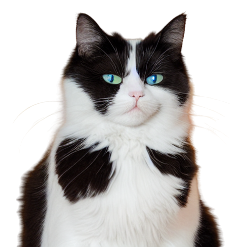

Somos uma ONG dedicada ao resgate de gatos em situações de risco e abandono. Nossa missão é garantir uma vida digna a esses animais, oferecendo cuidados veterinários, abrigo seguro e amor.
Além disso, trabalhamos incansavelmente para encontrar lares amorosos para os gatinhos resgatados. Acreditamos que todos os animais merecem um lar cheio de amor e carinho.
Venha conhecer nossos gatinhos disponíveis para adoção e ajude-nos a transformar vidas!






O abandono de gatos traz vários problemas para os gatos e para a sociedade em geral. Os gatos abandonados sofrem com a fome, sede, doenças e lesões, e também podem ser portadores de doenças que afetam os seres humanos.
Além disso, podem causar impactos ambientais, problemas de segurança e custos elevados para a comunidade. Por isso,
é importante conscientizar as pessoas sobre a adoção responsável e o cuidado adequado com os animais de estimação para prevenir o abandono de gatos e outros animais.